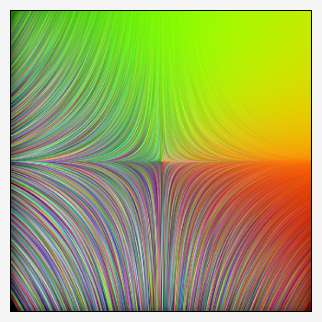

-eigen solves for the eigenvalues and eigenvectors of selected images, these being regarded as specialized datasets not particularly pictoral in nature. The command has two distinct modes of operation which stems from the organization of the selected images.
In the simplest case, the selected image is square, has a depth of one and has a single channel spectrum. These are regarded as square matrices, the pixel intensities are taken to be real value coefficients. Under these circumstances, -eigen factors such n × n matrices into two tensors, a n × 1 column vector of eigenvalues, sorted by descending magnitude, and a n × n matrix, where each column is an n × 1 eigenvector. The command places these on the image list in eigenvalue, eigenvector order.
The matrix may be arbitrarily large but there are practical limits regarding memory and user patience. The command decomposes a 1024 × 1024 matrix in about five to six minutes, which is probably an extreme use case. More typically, -eigen solves relatively small matrices with about one hundred coefficients or less.
In the more common case, the selected image is a tensor field – an array of tensors. In this case, each image pixel consists of the diagonal and upper triangular coefficients of either a 2×2 or 3×3 symmetric matrix, coefficients in row-major order, indexed from channel zero. The tensor field is associated with an image and each pixel in the tensor field conveys some information about the locale of the corresponding pixel in the associated image. Particulars depend on the generator of the field. See -structuretensors and -diffusiontensors. 2×2 tensors capture the dynamics surrounding pixels in the width and height cardinal directions, 3×3 tensors include the additional depth dimension. Tensor fields need not be square; indeed they match the width, height and depth of their associated image, but tensor fields must have the exact number of channels to hold the diagonal and upper triangle of the tensor, three for 2x2 tensors and six for 3x3 tensors.
The command takes no parameters, but places constraints on the organization of selected images. These may either be square, single channel and one slice, which are regarded as matrices with real coefficients, or have arbitrary width, height and depth, which are regarded as tensor fields. Single slice tensor fields must have three channels; multi-slice tensor fields must have six channels in each slice. See the "Tensor Field" discussion in the -eigen2tensor documentation.
When operating on tensor fields, the command "expands" single instances of these into two images, the first containing eigenvalues, the second an abridged set of eigenvectors.
For tensor fields associated with single slice images, where there is no depth dimension; the eigenvalue image contains two channels, one for each eigenvalue of the original 2×2 tensor. The eigenvector image contains normed components of just one of the two eigenvectors. Since the original 2×2 tensor is symmetric, the second eigenvector is at right angles to the first, so its components may be easily derived.
For tensor fields associated with multiple slice images, there is a depth dimension; the eigenvalue and eigenvector images have the same number of slices as the associated image. In each slice, the eigenvalue image has three channels, one for each eigenvalue of the original 3×3 tensor. The eigenvector image has six channels in each slice, containing normed components of two eigenvectors at right angles to one another, this following from the symmetry of the original 3×3 tensor. The components of the third eigenvector may be inferred as it is normal to the plane defined by the other two eigenvectors.
Whether it was a single or multi-channel tensor field originally in the offing, the command places the eigenvalue image on the image list first, followed by the abridged eigenvector set. This is precisely the order expected by -eigen2tensor, which regenerates tensor fields from eigenvalue - eigenvector image pairs. Insofar as such pairs are concerned, the command -eigen2tensor operates in the opposite direction and "restores" a tensor field unpacked by this command.
Garry Osgood